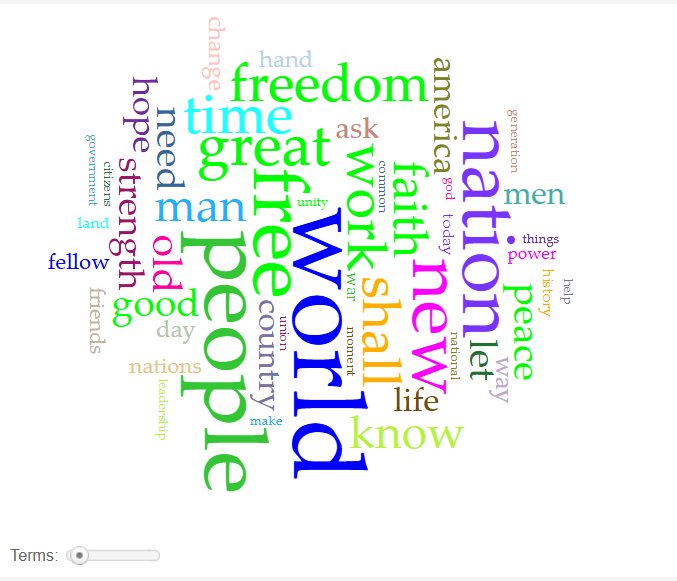
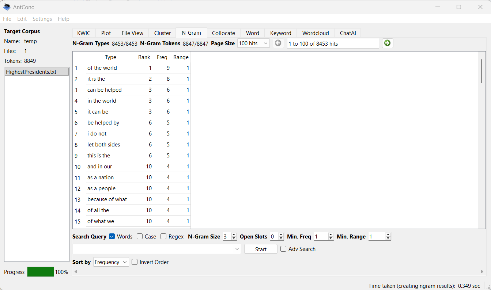
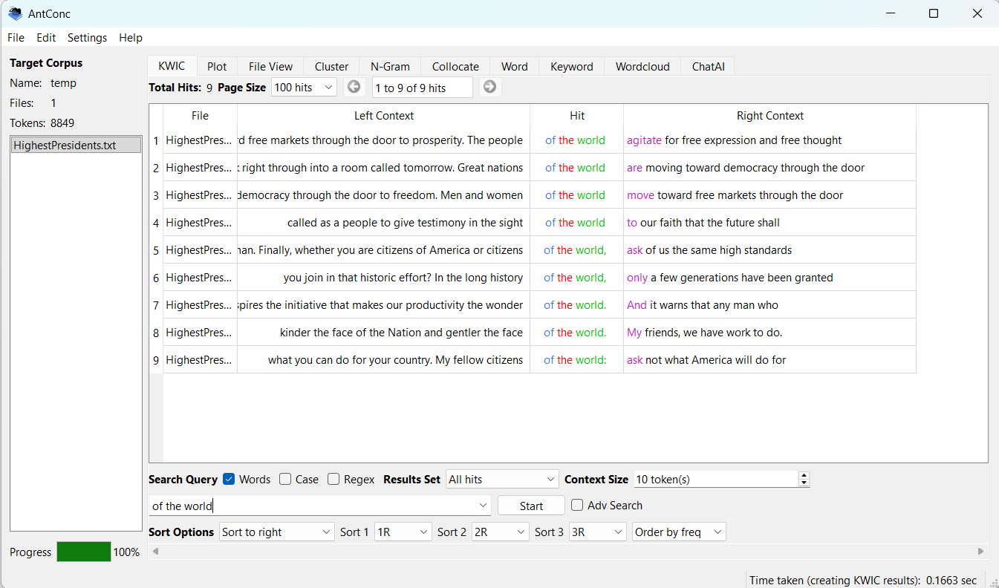
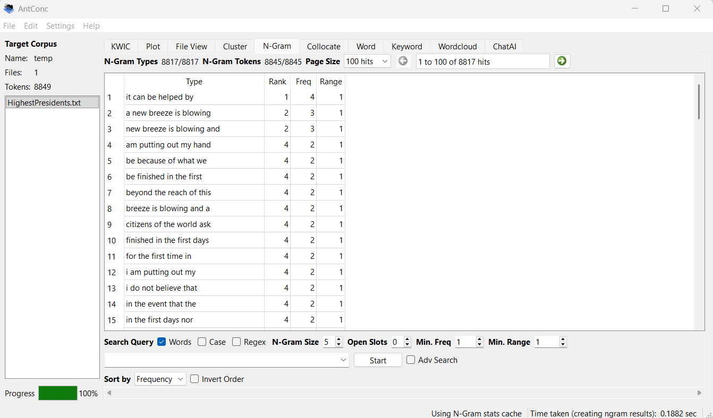
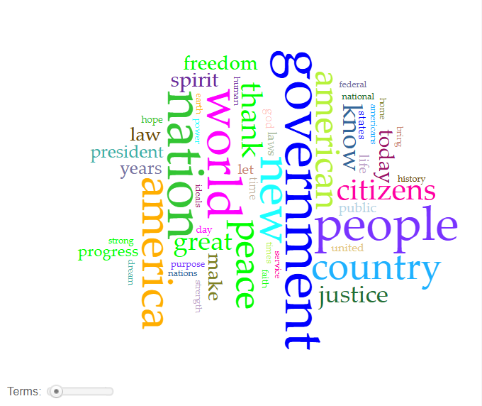
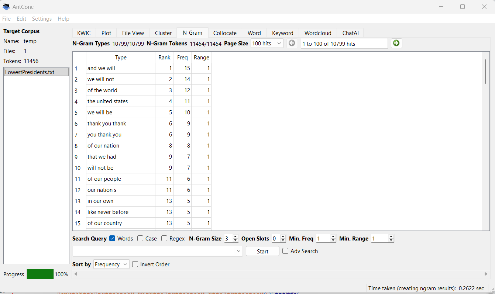
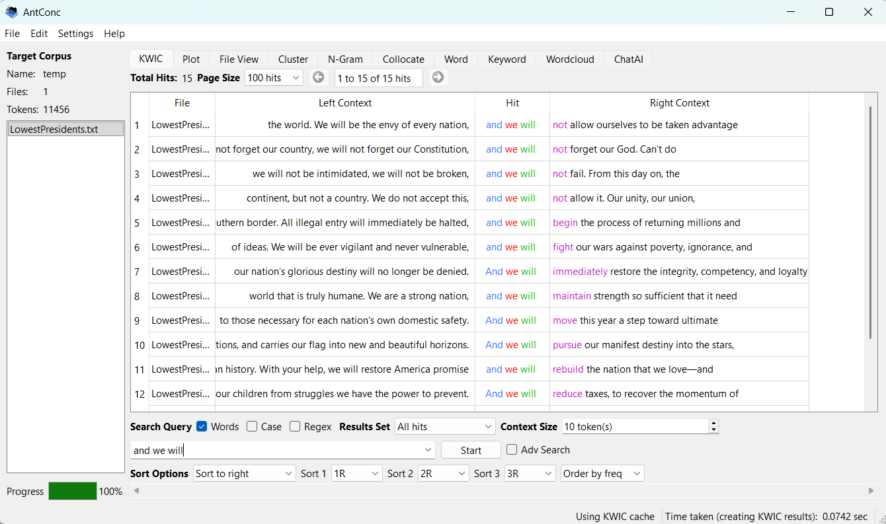
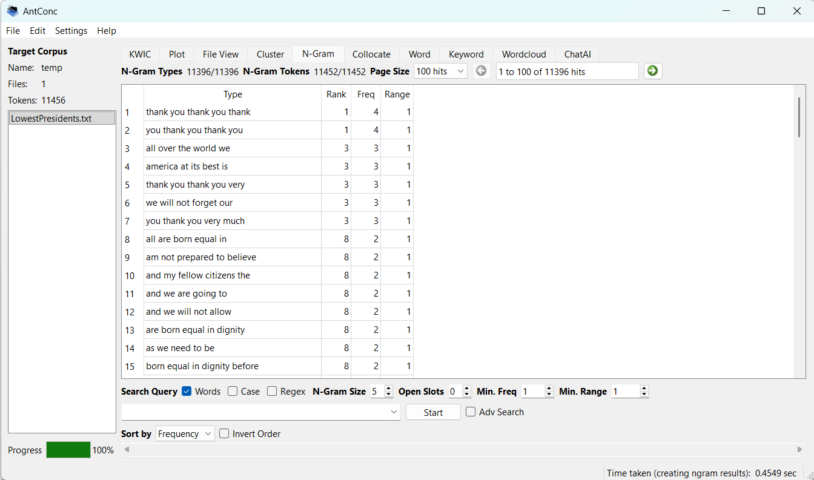

The speeches that I chose to use come from the 5 presidents with the highest and 5 with the lowest average approval rating. I chose to do this topic because I want to compare what these presidents said at the start of their presidents and see if there is anything that could hint at their later approval rating
Link to SpeechesAnalysis of the inaugural address speeches of the presidents with the highest average approval rating. The presidents included are John F. Kennedy 1961, Dwight D. Eisenhower 1953, Franklin D. Roosevelt 1933, George H. W. Bush 1989, and Lyndon B. Johnson 1965.
The most frequent used words in the corpus are: World(42), People(34), Free(32), Nation(30), and new(22). Some honorable mentions are, Strength, Peace, Hope, and fellow. Through AntConc, i can see that the most frequent three word phase is "of the world." Delving deeper into that, "of the world" is followed by things "agitate for free expression" and "are moving toward democracy." Other Ngrams of three talk about things like "can be helped", "let both sides", and "as a nation." This shows a lot of unifying language meant to bring the people together. The use of "can be helped" acts a cushion, that I will talk more about later, that can deflect blame. Moving on to the Ngram of 5, we see things like "a new breeze is blowing," "am putting out my hand," and "it can be helped by." This is more of that unifying language that I was talking about where these presidents are trying to inspire things like hope, faith, and a new generation. It's almost like these presidents are being more open or honest with their audience in a way. The language they use gives off vibes of a good and honest try at things. This vibe may very well be what made them the most like presidents in U.S. history.




Analysis of the inaugural address speeches of the presidents with the lowest average approval rating. The presidents included are Donald J. Trump 2025, Jimmy Carter 1977, George W. Bush 2001, Richard Nixon 1969, and Herbert Hoover 1929.
The most frequently used words in the corpus are: Government(54), Nation(53), World(46), People(45), and America(39). Other frequently used words are, country, justice, freedom, and today. Using Antconc I was able to learn that some of the most frequently used three word phrases is "and we will," which was used 15 times in total. Looking further into that it is revealed "and we will" is paired with things like, "fight our wars against poverty," "immediately restore the integrity, competency, and loyalty," and "reduce taxes to recover the momentum." These are very big claims said with authority. They lack the cushioning that I talked about earlier. Cushioning with things like "may," or "WE can" makes it so if you don't hold up your claims, it won't be that bad because you weren't so forceful about it. This authoratative language is well built into the Ngram of 3 with examples like, "we will not," "we will be," and "will not be." There is a lot of confidence to be witnessed with this very assertive and confident language. Perhaps they are the lowest rated because they weren't able to live up to all of the claims that were being made when they were first elected president. Looking at the Ngram of 5 is unfortunately not that helpful for analysis but I thought it would be funny to include because it's just Trump saying "thank you" about 80 times throughout his speech. There are hints at the assertive language in the Ngram, but as I said, mostly just "thank you" over and over again in different ways.




The inaugural addresses of presidents with the highest and lowest average approval ratings reveal noticeable differences in tone, word choice, and rhetorical style. Although both groups commonly discuss themes like the nation, the people, and the world, they present these ideas in different ways. The lowest-rated presidents tend to use more forceful and certain language. Phrases such as “and we will,” “we will not,” and similar statements show confidence and authority while making bold promises to the public. However, this kind of language can create high expectations, and if those promises are not met, public approval may decline. In contrast, the highest-rated presidents use more hopeful and unifying language. Common phrases like “can be helped,” “let both sides,” and “as a nation” emphasize cooperation, possibility, and shared responsibility. Their speeches also include words such as peace, hope, and strength, which create a more inspiring tone. Unlike the commanding style of the lower-rated presidents, these speeches seem more open and realistic. This suggests that presidents who use inclusive and optimistic rhetoric may connect better with the public and maintain stronger approval ratings over time.